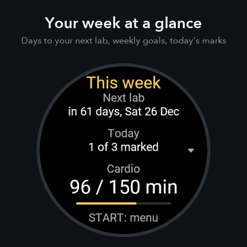
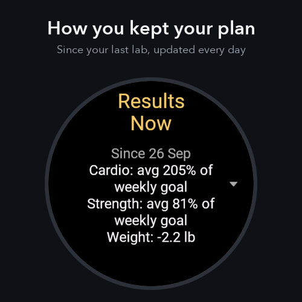
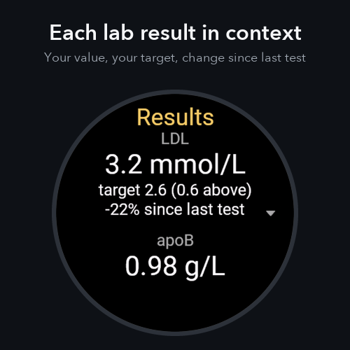
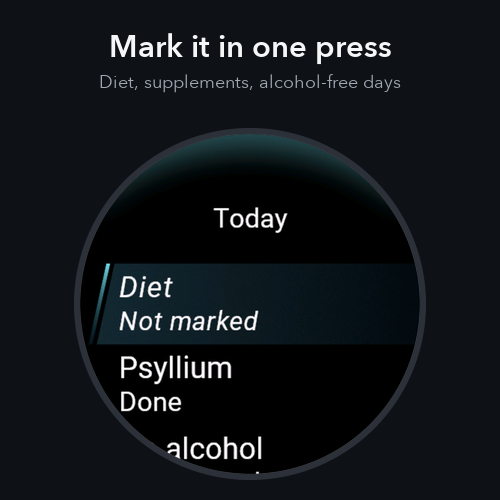
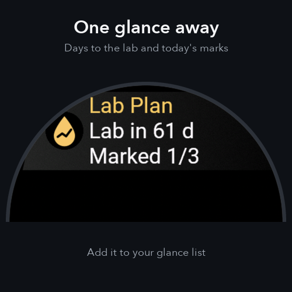

Lab Plan





Your blood work only tells half the story. Lab Plan puts the other half next to it: how well you actually followed your own plan between tests. Pick your markers - cholesterol, apoB, LDL, triglycerides, HDL, HbA1c or fasting glucose - set your targets, and watch each result land beside the cardio, strength, diet and habits you kept in that window.
It is a journal, not medical advice. It never interprets a number or tells you what caused a change. It just keeps the two things side by side, on your wrist, so you can see them together.
Lab Plan is a personal journal for informational purposes only. It is not a medical device and does not diagnose, treat, or provide medical advice. Always consult a qualified healthcare professional about your lab results and your health plan.
The problem it solves
- You get an LDL, apoB or HbA1c result every few months - and forget how the months in between actually went
- So when a number moves, you can't tell what it's responding to
- Lab Plan records your consistency as you go, so next time the context is already there
Your results, next to your effort
- Up to 3 markers - LDL, apoB, triglycerides, HDL, total cholesterol, HbA1c, fasting glucose
- Each result shows your value vs your target and the percent change since your last test
- "Now" at the top: how the plan is going since your last lab (or since you installed)
- Then every past lab, newest first, each with how the plan went in that exact window
- Periods run lab to lab - never a vague "a few weeks before the test"
Tracked automatically
- Cardio - minutes a week, from Garmin intensity minutes or from recorded workouts (never both, so nothing is double-counted)
- Strength - minutes a week, from your Training activities
- Weight - from your Garmin profile
You mark in one tap
- Diet, supplements, alcohol-free days - tap to mark today
- A 7-day window to fix a day you missed
- Alcohol-free days and other optional factors are off until you turn them on
Stay on schedule
- Move your next lab from the watch - 1, 2 or 4 weeks later, a week earlier, or pick a date. Plans drift; no phone needed
- Evening reminder if today isn't fully marked
- Test-prep reminders each morning in the days before a lab, with your own prep rules
- Optional halfway nudge at the midpoint between labs
- Glance - days to your next lab and today's marks, without opening the app
Set up on your phone (Garmin Connect → Lab Plan settings)
- Test 1-3 - choose each marker, its unit and your target. Set these first
- Next lab date - the one date you must set - plus prep reminder days and your prep rules
- Week start, cardio source and goals, strength goal, weight
- Diet, supplements, alcohol-free days, waist, and reminders (evening, halfway)
- Past results 1-8 (optional) - at the end; the watch copies each into its history
How payment works (no free trial)
- Lab Plan is free to install from the Connect IQ Store
- A one-time $3.99 unlock through KiezelPay, a secure payment service used across many Connect IQ apps - no subscription, no account
- On first launch the app shows a short unlock code and a web address
- Open that address on your phone or computer, enter the code, and pay once
- With your watch connected to your phone, the app unlocks automatically within a minute - no key to type back
- There is no trial - this page is your full preview before you buy
App languages
- English and Ukrainian
- The app follows your watch's language automatically
Compatible Garmin watches
- Built for the latest Garmin watches (Connect IQ API 6.0+), including:
- Forerunner 970, 570, 170 and 70
- fēnix 8, fēnix 8 Pro, fēnix 8 Solar and fēnix E
- Enduro 3
- Venu 4
- Instinct 3 (AMOLED) and Instinct Crossover (AMOLED)
- vívoactive 6
- D2 Mach 2 Pro
- Check the Connect IQ Store listing for your exact model
How to install Lab Plan on your Garmin watch
- Open the Connect IQ Store listing for Lab Plan
- Tap Download (free to install) and sync your watch with the Garmin Connect app
- In Garmin Connect, open Lab Plan → Settings and enter your tests, targets and next lab date
- Open Lab Plan on your watch - on first launch, use the unlock code shown to pay the one-time $3.99 via KiezelPay
Frequently asked questions
Is Lab Plan medical advice?
No. Lab Plan is a personal journal for informational use only. It never interprets a result or says what caused a change. It is not a medical device and does not diagnose, treat, or advise. Talk to a qualified clinician about your results.
Is there a free trial?
No. Lab Plan is a one-time $3.99 purchase through KiezelPay with no trial period. This page, with its screenshots and full walkthrough, is the preview - so you know exactly what you are getting before you buy. Once unlocked, the app is yours forever on your Garmin account.
How does payment work?
Lab Plan is free to install from the Connect IQ Store, then a one-time $3.99 unlock through KiezelPay, a secure payment service used across many Connect IQ apps. On first launch the app shows a short unlock code and a web address. Open that address on your phone or computer, enter the code, and pay once. With your watch connected to your phone, the app unlocks automatically within a minute - no key to type back. No subscription, no account.
Which lab markers can I track?
Up to 3 markers at a time, chosen from LDL, apoB, triglycerides, HDL, total cholesterol, HbA1c, and fasting glucose. You set the unit and your own target for each one in Garmin Connect.
Do I have to enter my past results?
No. The only date you must set is your next lab date. Past results are optional - there are 8 slots (about two years of tests) you can fill in Garmin Connect, and the watch copies each one into its history.
What is tracked automatically and what do I mark by hand?
Automatic: cardio minutes (Garmin intensity minutes or recorded workouts - never both, so nothing is double-counted), strength minutes, and weight from your Garmin profile. By hand, in one tap: diet, supplements, and alcohol-free days, with a 7-day window to fix a missed day.
Does Lab Plan need my phone or the internet?
The app runs fully on the watch with no account and no cloud. Your watch needs a phone connection for two things only: the one-time KiezelPay unlock, and syncing the settings you enter in Garmin Connect.
What languages does it support?
English and Ukrainian. The app follows your watch's language automatically.